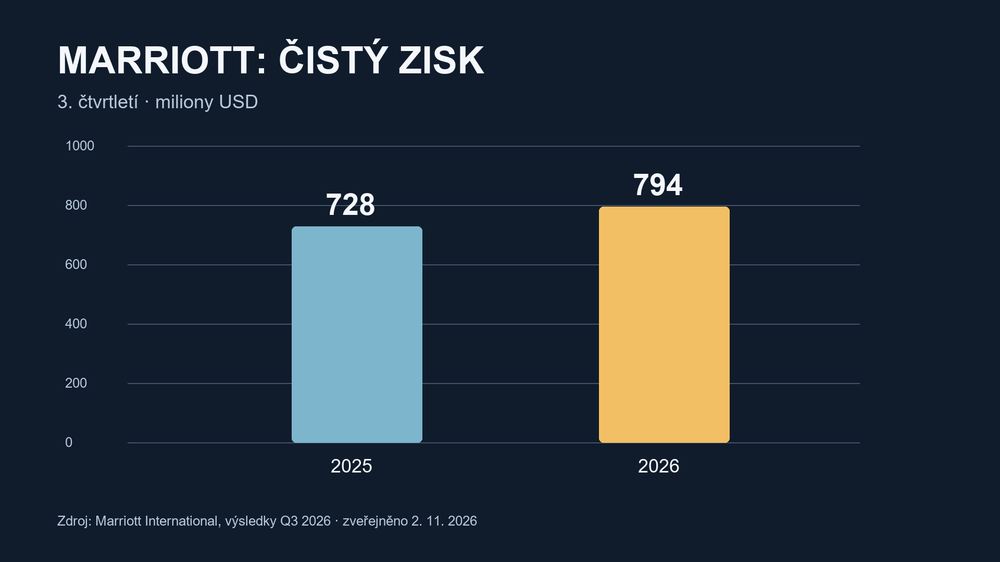

AI a finance
2. listopadu 2026
ChatGPT, Claude, datová centra, hospodářské výsledky a přehled trhů.
Dnešní video
Český komentář · automaticky časované titulky · zdroje níže
ChatGPT a Codex mají sdílet limit
OpenAI plánuje od prosince společný limit využití pro ChatGPT a Codex u tarifů Plus, Pro a Business. Do tohoto limitu se podle firmy nebude započítávat běžný Instant chat. Zbývající využití a čas obnovení mají být dostupné v nastavení. Pokud používáte Codex na větší aplikaci a zároveň ChatGPT na náročnější úkoly, vyplatí se novým podmínkám věnovat pozornost. Jde zatím o plánovanou změnu. Zdroj: OpenAI.
Claude a kopírování her
Starší zpráva ze 30. října se týká Claude Code a modelu Opus 5.5. Anthropic podle vyjádření poskytnutého médiu Game Developer upravila instrukce tak, aby se nástroj vyhýbal obnovování konkrétních cizích her. Tvorba originálních her nebo práce s vlastním návrhem má zůstat možná. Praxi je dobré sledovat, protože nelze předem zaručit, že systém vždy správně rozliší oprávněné zadání. Zdroj: Game Developer, vyjádření Anthropic.
Datová centra a elektřina
OpenAI 2. listopadu představila program Grid Protectors. U budoucích výpočetních areálů chce spolupracovat s energetickými společnostmi na omezení odběru ve chvílích, kdy je síť pod tlakem. Pilotem má být plánovaný areál v Georgii. Dohoda podle OpenAI zahrnuje až 1 000 MW flexibilní odezvy. Výsledek závisí na realizaci a skutečném provozu, zatím nejde o doloženou úsporu. Zdroj: OpenAI.
Čína: slabší průmyslový průzkum
Čínský statistický úřad oznámil 31. října říjnový výrobní PMI 49,3 bodu po zářijových 50,1. Hodnota pod 50 ukazuje v tomto průzkumu na převahu odpovědí odpovídajících oslabení aktivity. Index není přímým měřením tempa růstu celé ekonomiky. Zdroj: čínský statistický úřad.
Marriott: výsledky a cestování
Marriott za třetí čtvrtletí 2026 vykázal čistý zisk 794 milionů USD, zatímco ve stejném čtvrtletí roku 2025 to bylo 728 milionů USD. Celosvětový výnos na dostupný pokoj (RevPAR) meziročně vzrostl o 6,5 % při použití stálých dolarových kurzů. Výsledek jedné firmy sám o sobě nepředpovídá cenu konkrétního hotelu. Zdroj: výsledky Marriott International.
Trhy a kryptoměny
Associated Press uváděla 2. listopadu v 10:15 východoamerického času růst indexu S&P 500 o 0,8 %. Jde o průběžný údaj, nikoli závěrečnou hodnotu. Zdroj: AP.
Při kontrole CoinGecko přibližně v 16:48 SEČ byl Bitcoin kolem 77 946 USD a Ethereum kolem 2 289 USD. Jde o čas pozorování v prohlížeči, ceny se průběžně mění. Index Alternative.me při předchozí kontrole ukazoval 37 ze 100, tedy strach; předcházející hodnota byla 34. Index se podle metodiky soustředí na Bitcoin a nepředpovídá budoucí cenu.
Tyto informace slouží k orientaci a nejsou osobním investičním doporučením.
Výsledky v grafu

Zdroj: Marriott International.